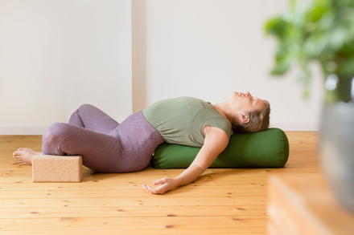
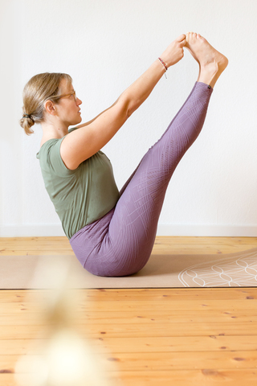
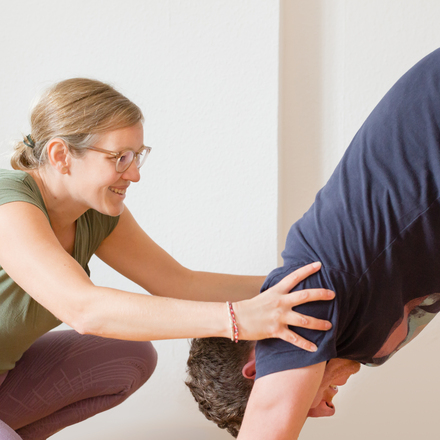
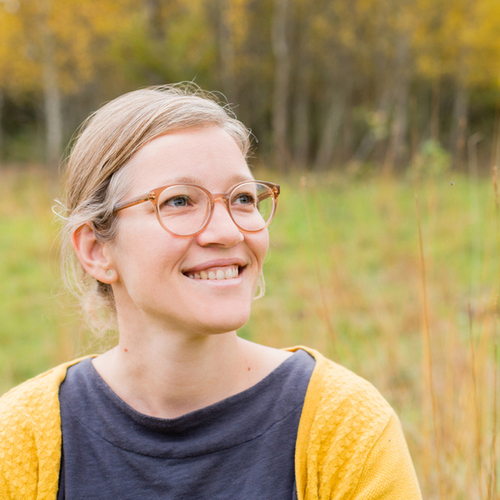

Kurse
Aktuell offene Yogastunden im Herzen von Karlsruhe:
Montags, 7.00 - 8.15 Uhr, Yin-Yang Yoga zum Wochenstart
Dienstags, 17.30 - 18.45 Uhr, Yang-Yin
Kursort: Stephanienstraße 21, Hinterhof bei Keramikatelier Dagmar Langer
 Die Yogastunden sind vom Balanceprinzip Yin & Yang und Hatha-Yoga geprägt. Entspannung spüren und Kraft tanken, das ist das Ziel.  Die jeweiligen Stunden setzen sich aus länger gehaltenen Dehnübungen (Yin) und dynamischen Abfolgen (Yang) zusammen. Mit dieser Art von Yoga wird das Fasziengewebe stimuliert und deine Muskulatur gestärkt.
Bei den Yang orientierten Übungen (Asanas) liegt der Fokus auf der Körperausrichtung, der Aktivität und der Muskulatur. Bei den Yin-Übungen ist das Loslassen an Anspannung und die Ruhe von Bedeutung. Musik und meine Anleitung werden Dich begleiten. Verlasse Deine Matte mit einem Lächeln :).
 Hochwertige Matten sind vorhanden, gerne kannst Du aber auch Deine eigene Matte mitbringen.
Preise
Eine Probestunde kostet 5 €, eine 5er Karte kostet im Februar 50 €
reguläre Einzelteilnahme morgens: 12 €
reguläre Einzelteilnahme abends: 13 €
Anmeldung
Wenn Du an einer Yogastunde teilnehmen möchtest, dann melde Dich doch einfach kurz unter
om@happy-yoga-ka.de . Mehr Impressionen auch unter: happy_yoga_ka.
Ein Drop-In ist jederzeit möglich, solange der Raum den Platz bietet.
Was muss ich sonst noch wissen?
Bitte sei ca. 10 Minuten vor Kursbeginn da, gerade wenn Du das erste mal kommst, gerne auch früher.
Aus organisatorischen Gründen wird die Eingangstür pünktlich verschlossen. Der Raum ist
20 Minuten vor Beginn geöffnet und befindet sich im Hinterhofsgebäude. Also keine Scheu, einfach
durch den Eingangsbereich durchgehen, die Hoftür öffnen und dann siehst Du das Gebäude. Dein Fahrrad
solltest Du draußen abstellen, da die Plätze im Innenhof für die Bewohner sind und diese nicht durch laute
Geräusche gestört werden möchten.
Für die Stunde selbst brauchst Du
bequeme Kleidung, womit du Dich gut in alle Richtungen bewegen kannst. Um gerade im Herbst und Winter es
angenehm warm zu haben, sind etwas dickere Socken und ein Pullover/Weste für die Entspannungsübungen wie
Shavasana gut.
Sonst
wird Yoga barfuß praktiziert. Bitte informiere mich bei Verletzungen, körperlichen Einschränken und
Schwangerschaft. Deine Beweglichkeit und Dein Alter sind egal. Es gibt auch unterstützende Hilfsmittel wie
Blöcke, Decken und Bolster.
Über mich & Yoga
Mein Name ist Tina, ich bin 36 Jahre alt und wohne seit 2016 in Karlsruhe. Yoga ist für mich schon seit mehr als 10 Jahren ein Begleiter.
 Beim Yoga ist mir wichtig, in Kontakt mit mir selbst zu kommen und durch die Übungen Entspannung, Ruhe und Kraft zu tanken. Yoga konnte mir schon in verschiedenen Phasen meines Lebens Freude schenken und Rückhalt geben. Es macht mir viel Spaß in einer Gruppe zu üben und trotzdem auf meiner eigenen Matte einen Raum zu haben, um meine Körperwahrnehmung zu schärfen.
Ich praktiziere unterschiedliche Varianten von Hatha-Yoga. Mir ist es wichtig, durch Yoga Balance zum Alltag zu schaffen. Beim Yoga geht es für mich auch um Achtsamkeit und durch kleine Meditationen, Atemübungen oder auch durch eine dynamische Abfolge von Asanas (Vinyasa Yoga), den Blick nach Innen zu richten. Selbstfürsorge und ein gutes Gespür von eigenen Grenzen sind wichtig beim Üben. Das Schöne ist auch, dass sich Yoga nicht nur körperlich positiv auswirkt, sondern die Gedanken und den Geist in Einklang bringt. Sich mit den anderen Yogis zu verbinden und auch mal zu lachen, ist etwas, was in meinen Stunden Raum einnehmen darf! Ich bin eine von der Yoga Alliance zertifizierte Yogalehrerin und auch dort registriert.
Ich freue mich darauf, meine Erfahrung mit Dir zu teilen und Dir einen Raum zu geben, um Yoga für Dich zu entdecken. Yoga ist Erfahrung!
Om & Shanti & bis bald!
Tina
2009: Studienabschluss an der Universität
Freiburg Diplom Volkswirtin
2011-2019: Berufliche Tätigkeiten in der Marktforschung (Medien und Handel)
Mai 2019: Ausbildung zur Yogalehrerin (200h), Bali, Loka Yoga
September 2019: Weiterbildung Yin-Yoga (50h), Utrecht, Pure Energy